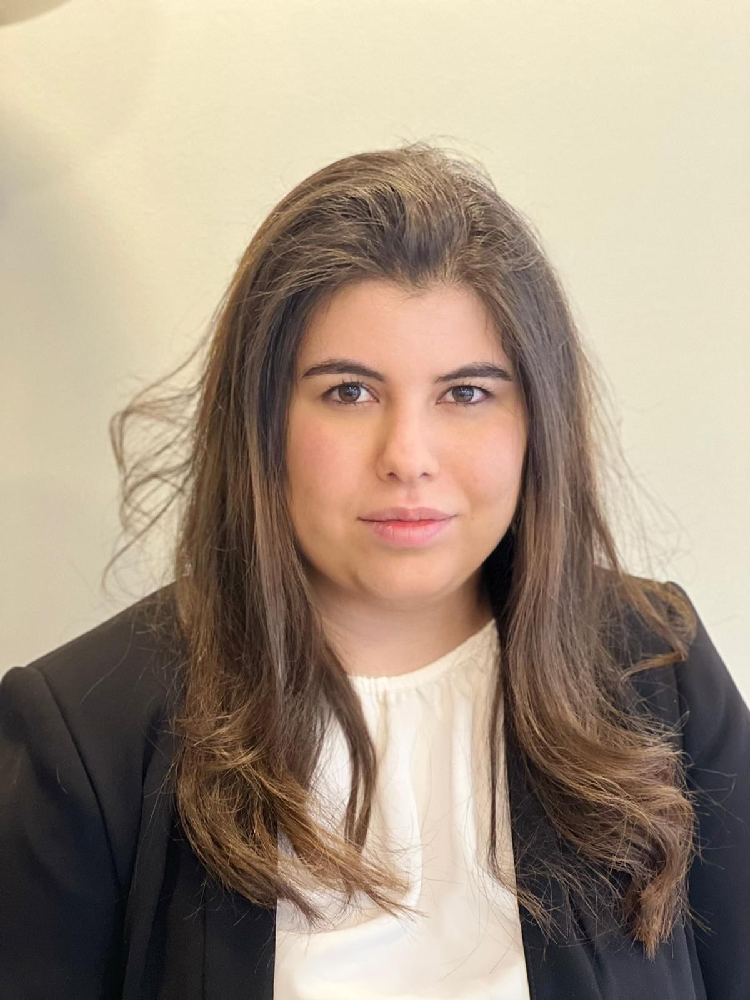
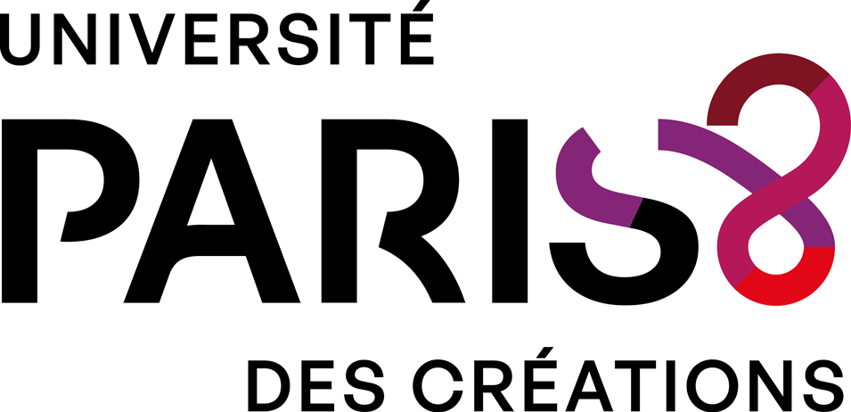
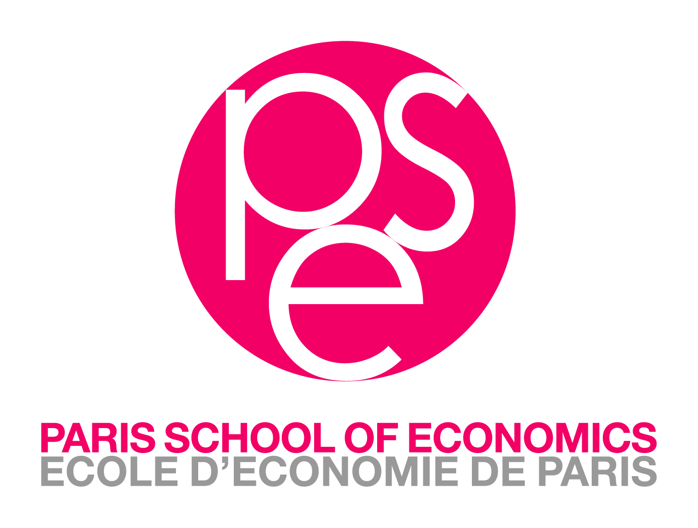
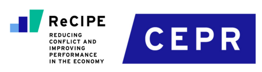
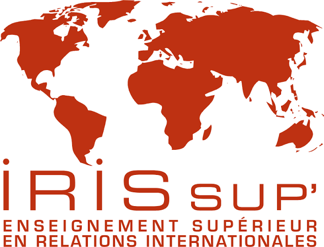
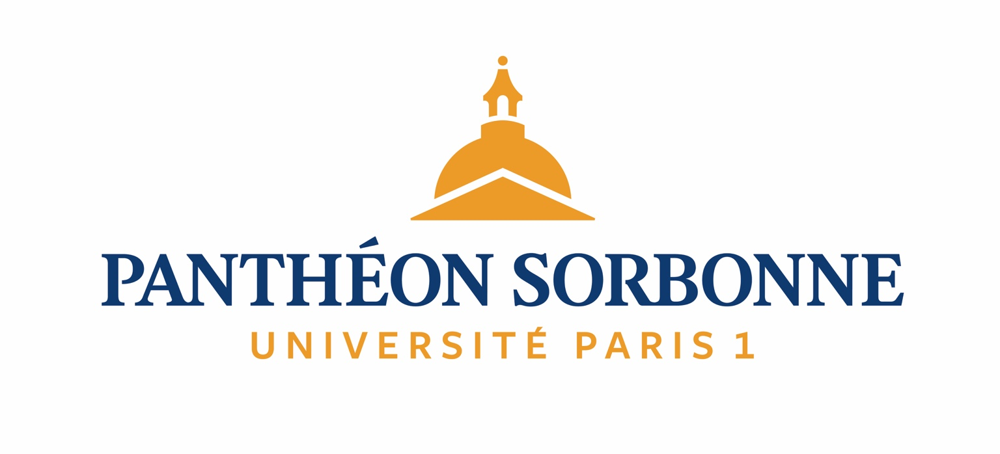

Trading Under Fire: Houthi Attacks and the Disruption of Global Shipping
This paper studies how the Red Sea crisis affected maritime routes, vessel behaviour, shipping delays, and global trade flows using high-frequency AIS and Kpler data.

PhD Candidate in Economics
Université Paris 8
Research Affiliate, Paris School of Economics
through the CEPR ReCIPE research project



Growing up in a region shaped by recurring geopolitical tensions made me aware from an early age of how political events can transform economies. My interest was further shaped by my professional experience across the Middle East, where I witnessed how conflict, sanctions, and political instability disrupted trade, reshaped markets, and affected people's livelihoods. Seeking to better understand these mechanisms ultimately led me to pursue a career in research, a path I now continue as a PhD Candidate in Economics at Université Paris 8 and a Research Affiliate at the Paris School of Economics through the CEPR ReCIPE research project. My research explores how geopolitical shocks reshape international trade through different transmission channels, with a particular focus on maritime trade, market integration, and global value chains.
This paper studies how the Red Sea crisis affected maritime routes, vessel behaviour, shipping delays, and global trade flows using high-frequency AIS and Kpler data.
This project studies how fragmented territorial control, financial disruptions, and political instability affect trade, prices, and market integration.
A bilateral indicator combining event data and international political information to measure conflict, cooperation, and geopolitical alignment over time.
This project develops a conceptual framework and classification protocol for political, geopolitical, and geoeconomic events.
This note examines the distinction between market spillovers, geopolitical shocks, and geoeconomic transmission channels.
This note studies the reorganisation of oil trade routes following sanctions and geopolitical fragmentation.
Trade and Financial Frictions in Fragmented Economies
£100,000 collaborative research grant (2026–2028), with Pierre-Louis Vézina (King's College London) and Jean-Charles Bricongne (Banque de France).

Supervision of Master’s theses and applied projects in geopolitics, international trade, development, and public policy.

Conducted sectoral economic analysis, advised French companies on market entry across the MENA region, and organized high-level trade missions with government and private-sector stakeholders.
Managed academic operations, coordinated institutional activities, and implemented educational policies while operating in a complex geopolitical environment.
Conducted market analysis, advised French companies on business opportunities in Qatar, and supported high-level France-Qatar economic partnerships.
PhD Candidate in Economics.
Trade Shocks and Geoeconomic Fragmentation.
Supervisor: Professor Jamel Saadaoui.
Pre-Doctoral Studies in Economics.
MSc in Financial Management.
Master in International Relations, Middle Eastern and Mediterranean Studies.
Bachelor in Political Science.
FREIT · Alghero, Italy · September 2026
University of Exeter, United Kingdom · September 2026
Kiel Institute for the World Economy, Germany · April 2026
2026
Email
nathalie.elbazzal@psemail.eu
Office
Paris School of Economics
Office R4-66
48 Boulevard Jourdan
75014 Paris, France